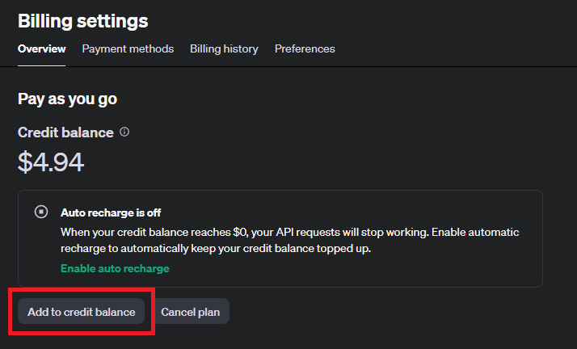
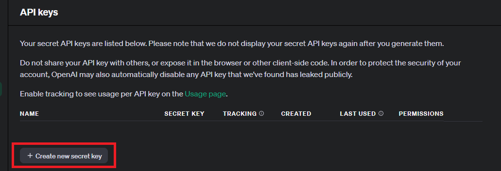
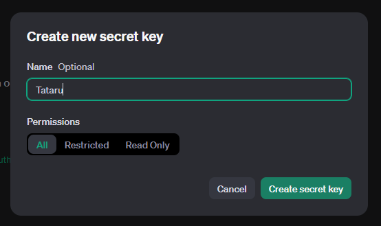
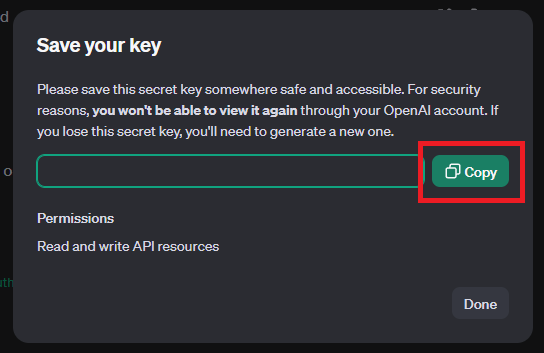
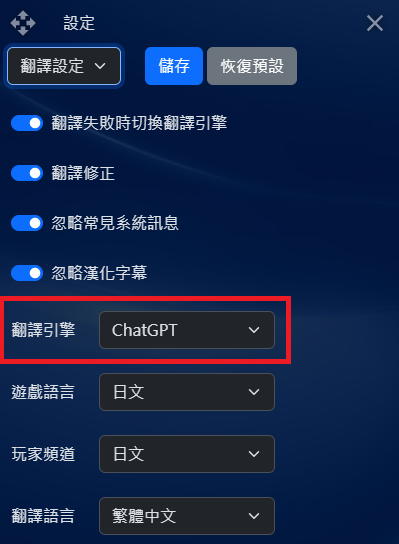

註1: 本功能需綁定付款資訊
註2: GPT-3.5 Turbo無需月費，只需付API流量費
註3: GPT-4 Turbo僅供月費帳戶使用，且仍需要付API流量費
-
至
OpenAI官網
點擊右上角的Log in，然後選註冊建立一個OpenAI帳戶，已有帳戶者可跳至下一步
-
登入後前往
Billing settings
儲值API用的餘額(Add to credit balance)

-
前往
API keys
建立一個API KEY(Create new secret key)，此功能需要手機驗證，建立完畢後按下Copy鍵將API KEY複製起來



- 使用快捷鍵【Ctrl+V】將API KEY貼到【API設定】>【ChatGPT設定】的API KEY欄位裡
-
模型預設為【gpt-4o-mini】，若要更改請從
https://platform.openai.com/docs/models
複製Model代號
-
儲存完畢後請回到【翻譯設定】將【翻譯引擎】更改為【ChatGPT】，並按下【儲存變更】，儲存後即可開始使用
